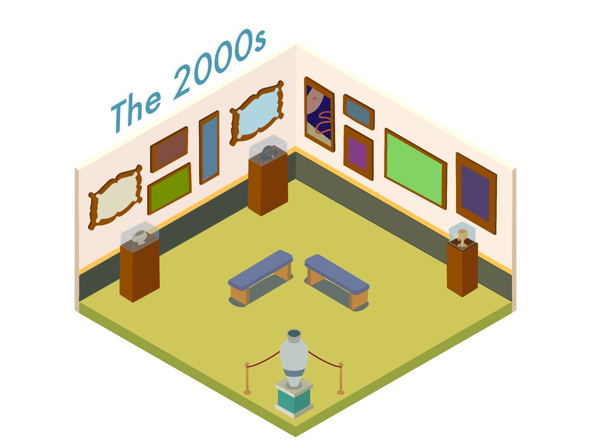
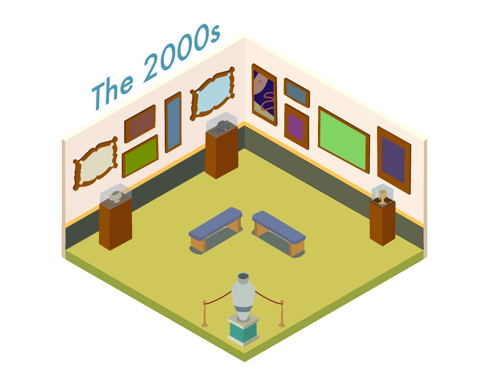

What is this?
The Museum of Ads and the Male Gaze is a digital museum exploring the male gaze in food and drink advertising from the 1970s to today. We will explore different print media in each decade and break down signifiers in the advertisements that exemplify the male gaze. Some decades have very obvious signifiers of sexualization or objectification, while others might be more subtle in their use of the male gaze. In spite of these differences, the male gaze has continuously impacted advertising in past decades and still does today.
How to view:
Click through the various decades to explore different examples of advertising and how the male gaze has remained prevalent throughout food advertising in the last several decades but taken on different forms. Happy gazing!
 
